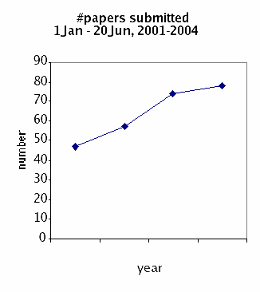

Society of Systematic Biologists
Home of Systematic Biology
Popular contentSyndicateCategories
User loginNavigationWho's onlineThere are currently 0 users and 10 guests online.
|
Minutes of Annual General meeting 2006SSB Annual Council Meeting Minutes Call to Order & Welcome √¢‚?¨" Scott Edwards, President SSB Attending: Scott Edwards (President), Pam Soltis (Past-President), Chris Simon (President Elect), Keith Crandall (Executive Vice President), Vicki Funk (Treasurer), George Weiblen (Program Director), Jessica Gurevitch (for Kelly Zamudio √¢‚?¨" Awards Director), Joel Cracraft (Board of Trustees), Rod Page (Editor), Priscilla Tucker (Councilor 06), Marshal Hedin (Councilor 08), Michael Donoghue (Councilor 08), Lacey Knowles (Councilor 08), Jack Sullivan (Councilor 08; Editor Elect), Louise Lewis (Councilor 07), Maureen O√¢‚?¨‚?¢Leary (Councilor 07), Scott Steppan (Councilor 07), Bruce Baldwin (Councilor 07), Debbie Ciszek (Managing editor), Juan Carlos Morales (NSF) Not Attending: Jeff Boore (Councilor 07; Via Skype), Billie Swalla (Councilor 06), Sydney Cameron (Councilor 07 √¢‚?¨" represented by Jim Whitfield), Shannon Hackett (Councilor 06), Fredrik Ronquist (Councilor 08), David Hibbett (Councilor 06) Discussion on role of Council Members √¢‚?¨" to promote the role of systematics at our own institutions; promote the Society and associated awards opportunities; solicit activities for meetings (symposia etc.); help increase membership to the Society. Please be ambassadors for the Society. Joint Council Meeting Report - Edwards Updates on coming meetings: 2007 Christchurch, New Zealand, 2008 Minnesota, 2009 Brown University, 2010 Portland State University, 2011 University of Costa Rica (in July). Conflicts with ESA first week in August and the international congress of botany in 2011. Jessica Gurevitch suggests the idea of a meeting planner and part-time Executive Director to be hired jointly by the three societies. Would like to know if the SSB has an interest in supporting such a position. A discussion of advantages and disadvantages of having such a person. SSB already contracts out membership and accounting. This would add additional strain on the budget. Difficulties in working with universities for professional meeting planners. Funk suggests that Simon, Weiblen, and Mindell work together to explore the idea relative to our budget. Update from NSF with discussion about funding rates (10%) and overburden of reviewers. NSF will have an information session on Sunday at noon. New report from the Committee of Visitors which recently evaluated NSF DEB will be available on their website shortly. Update from NESCENT director Kathleen Smith. They have opportunities for partnerships in data management, catalyst groups, working groups, sabbaticals, etc. Awards Report √¢‚?¨" Zamudio (given by Vicki Funk) Grad Awards Institution Mini-PEETs Institution International Institution Program Report √¢‚?¨" Weiblen Call for symposia for the 2007 meeting resulted in four proposals (see report). Meeting to be held in Christchurch, New Zealand June 16-21, 2007. Discussion of relative merits of the proposals. Edwards proposes that the Phylogenetic Diversity and Cultural Phylogenetics symposia be selected. Simon seconds. Further discussion. Tucker suggests getting proposals to the council with more lead time to review them. Donoghue suggests that for a meeting at an international venue like New Zealand, the program should attempt to organize sessions on native biota. Donoghue also recommends that we coordinate with SSE and ASN for overlap in symposia etc. Vote on provisional acceptance of these two symposia under the condition that the organizers improve the proposals in terms of talk titles and diverse representation in the symposia. Unanimously approved by the council. Update on Evolution 2008 meeting in MN. Dates June 20-24, 2008. Weiblen is working on a contract to have in hand by next June meeting. The contract for the Stony Brook meeting wasn√¢‚?¨‚?¢t signed until two days ago. SSB does not have a copy of the contract. They are signed by SSE. Meeting will be in Minneapolis. 2009 Brown University in Providence, RI at a convention center in Providence. Are we comfortable with SSE deciding on venue and signing contracts on behalf of SSB? Cracraft suggests that at a minimum, SSB should have at least one officer read and sign the contract for future meetings. Weiblen proposes that all three societies are represented for signature on future meeting contracts. Approved unanimously. Crandall suggests that the signature be the Program Director after consultation with the Executive Committee. Donoghue suggests that conceptually the program venue rotates among the three societies. He suggests we go back to that conceptual model. Election Results √¢‚?¨" Crandall Membership Report √¢‚?¨" Crandall Emeritus 51 Long-Term Planning Committee Report √¢‚?¨" Soltis Financial Report √¢‚?¨" Funk Expenses Balance +66,653 *(-10,599) (-55,761) (-34,005) Investment Update √¢‚?¨" Cracraft Journal Update √¢‚?¨" Page Rod Page Manuscript Central This is going reasonably well. From my perspective it is great to get a summary of what I need to do in a single screen. This makes it harder for manuscripts to get √¢‚?¨≈?lost√¢‚?¨¬ù (at my end at least). As always there are some annoyances. Dumb templates Taylor and Francis I think T&F are doing a reasonable, if unspectacular job. There are a number of things which bug me about their online service. Journal web site Missing issues RSS feeds DOIs Membership I√¢‚?¨‚?¢ve not been involved in this, but I think at some point it would be worthwhile thinking about whether the system we have at present makes sense. The issue of membership arises in several contexts: accessing T&F (online content, dealing with missing issues) and Society membership (dues payment, ballots, etc.). At present access to online content is via a crude hack on the Systematic Biology web site (T&F√¢‚?¨‚?¢s own web site claims to provide access but doesn√¢‚?¨‚?¢t really), and we still don√¢‚?¨‚?¢t have the most obvious way for members to join (credit card online). Perhaps this relates to publisher negotiations, but what we have at present strikes me as messy (and expensive). Surely there is an all-in-one solution out there? Debbie Ciszek √¢‚?¨" Managing Editor√¢‚?¨‚?¢s Report Note to council members: I realize the level of detail in this report is likely to be of more interest to AEs than to the council. Therefore, for anyone who does not have time to read the full report, I√¢‚?¨‚?¢ve placed the symbol √¢‚?¨≈?=>√¢‚?¨¬ù at a summary statement for each section. It should be easy to skip from arrow to arrow and get the gist of this report. I Submission Statistics: The graph shows total number of submissions each year, with the lower, darker portion of the bar giving the number of submissions through May of each year (this is included so that 2006 can be compared to previous years). It seems likely that our increasing impact factor is at least partly driving the increase in number of submissions. Book Reviews: David Morrison has been prolific in providing book reviews. He has overseen the publication of 17 reviews (4 so far in 2006, 9 in 2005 and 4 in the December issue of 2004). Geographic origin of submissions: Of the total number of submissions we√¢‚?¨‚?¢ve received through MC (since we went live 25Aug05), 69% came from a corresponding author outside the United States. II Submissions categorized by organism, and new AEs: 2005 SB submissions categorized by type of organism A paper is listed under an organism category if the organism was mentioned in the title, key words, or abstract. Organism categories # submissions III Manuscript Processing Statistics: Reject/Accept rate: Breakdown of Decision Categories The above graph includes all papers submitted via MC, 25Aug05√¢‚?¨"13Jun06. So far in 2006, Rod has returned 21 papers without review (usually √¢‚?¨≈?not appropriate for journal,√¢‚?¨¬ù sometimes √¢‚?¨≈?reject√¢‚?¨¬ù). This helps speed the overall response time statistic. In my estimation we are not simply getting more papers that are clearly inappropriate, it√¢‚?¨‚?¢s just that their numbers are increasing proportionate to the overall submission rate. The 70% rejection rate is a counterbalance to the increased number of submissions, and our backlog of papers for which we√¢‚?¨‚?¢ve received the final version from the author is actually decreasing (finally), which should lead to a shorter lag between acceptance and publication. Time from submission to decision letter to author: The graph above shows the 131 papers submitted via MC for which a first decision (as opposed to a decision on a revision) has been made. The average time to return a decision to authors is 52 days. The graph includes papers that were returned without review, which account for the majority of the papers in the 0√¢‚?¨"1 month category. There have been a total of 162 papers submitted via MC, so obviously several do not appear on the graph because they have not yet received a decision. Some of these 31 papers that have not yet received first decisions are still in review after a long period of time, so unfortunately the √¢‚?¨≈?2√¢‚?¨¬ù in the 5√¢‚?¨"6 month category is a misleadingly small figure. Any suggestions regarding how we can ensure that review periods do not continue beyond a reasonable length of time would be welcome. Current status of ms√¢‚?¨‚?¢ for which no decision has yet been made: The status on 16Jun06 of all manuscripts submitted via MC which are still in some stage of the initial (i.e. not revision) review process is shown below. Task to be performed # papers Lengths of published papers: For 2004 and 2005 combined, the average number of published pages per regular article was 14.7 (SD 5.5), and for POVs was 7.4 (SD 2.7). There is very little difference between the two years; for reg. articles the ave. in 2004 was14.9 and in 2005 was 14.7, while the 2004 ave. for POVs was 8.6 and in 2005 it was 6.7. In 2004, 61 regular articles and 11 POVs were published; in 2005 53 regular articles and 20 POVs were published. POV√¢‚?¨‚?¢s comprise 17% of submissions. Number of MC users: We currently have 720 users registered in MC. We√¢‚?¨‚?¢ve been gaining approximately 50 users per month (measured only over the past 3 months). Many of the users have entered keywords, so AEs might want to familiarize themselves with the advanced reviewer search functions (as I√¢‚?¨‚?¢ve heard it called, the √¢‚?¨≈?extra stuff√¢‚?¨¬ù that takes up most of the page on which reviewers are selected). In other words, you don√¢‚?¨‚?¢t necessarily have to think of an appropriate reviewer, you could search on a keyword and see if a name pops up that you recognize. IV Working with T&F: After working on only two issues, and doing the job well, our previously new Production Editor Jen McCleary left her position suddenly. Our new new Production Editor is Brendan Huffman (that makes three within the past year). Brendan has just started and seems to be doing fine so far with the task of familiarizing himself with our journal and its production. Also on the positive side, I recently asked for a small alteration in our MC setup, and it was done accurately and fairly quickly (a somewhat small change, but it had to be done by ScholarOne rather than myself or T&F). V Manuscript Central User Conference: The conference was April 24-25 in Charlottesville, VA, where ScholarOne is based. There were a variety of topics covered, such as their planned future product directions, and basic instruction. I estimate I was more advanced with MC than the majority of the attendees, mainly because most journals are struggling with conversion from version 1 to version 3 (no one speaks of a version 2), whereas SB changed to version 3 before we went live, i.e. while I was still learning and testing the system. Some of the most productive conference learning experiences I had were from conversations with other users; comparing notes about how we get around various shortcomings of MC, and exchanging ideas and tips. I won√¢‚?¨‚?¢t go into details about what was discussed, but anyone interested in the finer points of MC is welcome to talk to me about it (I won√¢‚?¨‚?¢t hold my breath √¢‚?¨" I realize most people want as little to do with MC as possible!). Web Site Report √¢‚?¨" Rod Page Rod Page, March 2006 In moments of tedium I√¢‚?¨‚?¢ve experimented with a few ideas. One has been to join Amazon.com√¢‚?¨‚?¢s Associate program, so see whether the web site could generate any money by displaying links to Amazon for books reviewed in the journal. Under Amazon√¢‚?¨‚?¢s Associates program an associate receives a percentage of the sale of each item made via clicking on a link on the associate√¢‚?¨‚?¢s site. Typically the percentage is around 5%. This has been an interesting experience, but as the results from the start of this exercise (August 2005) until now (March 1st 2006), we√¢‚?¨‚?¢ve made a grand total of $US 47.13. Items shipped Revenue Referral fees Traffic Basic web access statistics are available on the web site itself. Since March 2005 it√¢‚?¨‚?¢s been averaging just under 1000 visits a week, with a big spike (2005 visits, 920 of those on a single day) the week I announced the DNA barcoding issue on EvolDir and TAXACOM (see rather information poor graphic below). Membership services As mentioned in the report present at the Evolution 2005 meetings, there is a crude mechanism where members of the Society can access the journal online if they are members of the Systematic Biology site. This is unsatisfactory as I√¢‚?¨‚?¢ve no desire to manage lists of users, and it is often hard to work out if somebody is a member simply from an email address. This issue is discussed further in the Editor√¢‚?¨‚?¢s report. Publications Committee Report √¢‚?¨" Simon [From the Constitution: The Committee shall consist of at least five members including a Chairperson, the Editor, the most recent past-Editor, and the Treasurer. The Committee shall identify desirable policies for the Society√¢‚?¨‚?¢s publications, (minus the Editor) act for the Society in negotiating printing, publishing, and other contracts, and provide fiscal review of the Society√¢‚?¨‚?¢s publication management. The Committee shall also work with the publisher or printer to promote and increase membership. The Editor shall avoid contract negotiations with the publisher in order to maintain amiable relations between the current publisher and the Editor.] New Publisher. The last contract with Taylor and Francis was signed on the 20th May 2002 and covered Volume 52(2003) through 56 (2007). The previous contract was signed on the 21st of May 1997. The next contract will be signed on the 20th of May 2007 to cover Volumes 57 (2008) through 61 (2012). The search for the new Publisher will take place in 2006. June 2005. C. Simon as head of the publications committee has had short informal conversations with several publishers: 1) Blackwell√¢‚?¨"publisher of Cladistics--at the last meeting, at their instigation and, 2) Oxford University Press√¢‚?¨"publisher of MBE√¢‚?¨"by email (discussing unfortunate restrictions on PDF reprints). Both publishers seem professional and appropriate for EEB journals; both are willing to experiment with open access or not. CS also spoke with Bill Martin, the editor of MBE during 2005 by email. July 2005. C. Simon met with Bill Martin at the MBE meetings in Auckland. NZ. He is very pleased with OUP. Their first contract with OUP expires in December 2006 and they have decided to renew. July and August 2007. Debbie Ciszek contacted the managing editors of other several OUP (Nucleic Acids Research, MBE) and Blackwell (J. Physiology, Cellular Microbiology) journals to ask about interactions with their publishers. All were very happy. OUP journals had no complaints, Blackwell journals only very minor complaints. Debbie√¢‚?¨‚?¢s reports are available from the committee on request. SICB recently signed a contract with OUP, CS contacted them by email and they said that they were very happy with the contract. 9 November 2005. C. Simon met with Blackwell at their Boston Office: Notes follow. We need to be able to access our membership list instantly if the publisher controls it. Burke charges $22,000 to handle membership and wants an additional $6,000 to handle membership sign-up on line. Plus $600 ballot on line. 10th November 05, C. Simon spoke with Allen Moore, the SSE person heading their search for a new Publisher. They are √¢‚?¨≈?leaning towards Blackwell√¢‚?¨¬ù he thinks. Blackwell seems to want to help the Society. 13th December 05 Rod Page visited the book department of OUP and met with Ian Sherman from OUP. Ian's obviously keen for OUP to get Syst Biol, and Rod would be happy for this to happen, but Ian wasn't making a sales pitch was aware that it's not Rod√¢‚?¨‚?¢s decision to make). One thing that is nice to know is that Ian's been with OUP since 1998 which seems a lifetime in the publishing industry. CS has read through the T&F contract and begun to prepare a list of costs and procedures for the RFP√¢‚?¨‚?¢s. Taylor and Francis told Debbie Ciszek recently (March 06) that they suspect we are considering new publishers and they would like to meet with the Council at the next SSB meeting. CS and RO have set up a meeting with T&F (Corey Grey, Andrew Moyner) for Saturday evening. CS discussed publishers with her university librarian and library bibliographer to the following questions: 1) Do you have any comments on how the UCONN library likes Synergy versus Highwire? Librarian: Highwire is impressive; nearly 1000 journals for free (after 3 months- 1 year); division of Stanford libraries. She would choose Hirewire every time over Synergy (Blackwell) Bibliographer: Prefers Highwire (Stanford); not-for-profit 2) Oxford University Press vs. Blackwell vs Taylor and Francis? OUP is by far the most respected press for books. Journals may be equivalent among publishers. Think about BioOne. 3) Is Blackwell an "evil giant"? Not like Elsivier but does have a √¢‚?¨≈?big deal√¢‚?¨¬ù journal policy that Libraries will not be able to afford in the future. Used to be lumped with Elsevier, Wiley, Kluer, but he thinks that has passed. 4) How much of an increase per year is OK. We may not have a lot of say with a commercial publisher in how much the subscription price goes up (I will put this in the contract; we do have control now). Increase only what you need to keep your journal viable. When packages are no longer viable, high priced journals will be dropped. Next Editor Rod Page began his term as editor elect on 1 January 2004, receiving all new submissions. He began his term as Editor on 1 January 2005. His term will expire on 31 December 2007 at midnight but the next editor elect will begin receiving new manuscripts on 1 January 2007. This schedule places the approval of the new editor at the June 2006 SSB council meeting. Thus the search for the next editor should start by June 2005 providing a year for the difficult task of finding just the right person. In addition, this will give the new Editor time to recruit an editorial board and make arrangements with his or her university for compensation (e.g. a research assistant for 4 years, agreement to allow 50% teaching buyout by SSB, office space, etc.) Some recommendations were made to Pam Soltis who followed up on them (I assume that she will report on this). Miscellaneous The only other activities of the publications committee are approval of routine postings of announcements to appear on the website and review of the new website material to find items missing or needing updates. Please notify CS if you have ideas for new items or updates to appear on the SSB site. C. Simon has arranged for the printing of 72 Mugs (herp design) plus 72 additional mugs (mushroom design) by Museum Store Products (same company that printed the first 72 Mushroom designs). Taylor and Francis has agreed to sell them. C. Simon has contacted T√¢‚?¨‚?¢s Plus of Groton Connecticut. CS spoke with SSE about selling them at registration and they agreed. Both mushroom and lizard designs are available in wide neck band and narrow neck band styles. Some designs are smaller due to printer error. We got a discount on those shirts. CS paid for all the shirts and mugs and so needs to be reimbursed. We need more members; we owe. Our contract says, √¢‚?¨≈?The Society guarantees the Publisher a minimum Society membership of 1,300 full-rate plus student members per year; if the membership falls below this number, the Society agrees either to permit an increase in the per-member rate or to pay the Publisher directly the difference so as to bring the Publisher's revenue back to a minimum of $21 x 1,300 = $27,300/yr. √¢‚?¨≈? According to the latest publisher√¢‚?¨‚?¢s report we have 1024 members; We are short 276 members. In addition, 290 of our members are students so we owe T&F the difference. Not sure where the $21 comes from. I would have thought that should be the full rate membership of $40 x 1,300. ?? Managing Editor Debbie Ciszek salary increase. Debbie has been working an average of 24 hours since January (or even earlier). She documented her hours during April through June. So when I renew her contract in December I would like to raise her salary from 20 hours per week to 24 hours per week equivalent. This is 60% time rather than 50% time. I propose that we pay her back pay for those extra hours during April, May and June. Cracraft raises the issue of global access to the journal with free access to underdeveloped countries. BioOne allows such access. Will OUP and Blackwell? Soltis describes process of negotiations with Jack Sullivan to become Editor Elect. Soltis moves that Sullivan be next Editor. Edwards seconds. Unanimous approval. Ciszek√¢‚?¨‚?¢s annual salary is $45,427 x .5 = 22,713.50 with a proposal to increase to 60% time. Simon proposes to increase Ciszek√¢‚?¨‚?¢s time to a 60% rather than 50% appointment. Seconded by many. Unanimously approved. Council of Scientific Society Presidents Report √¢‚?¨" Edwards/Soltis Edwards will follow up on Membership Committee and Appointments Committee. O√¢‚?¨‚?¢Leary volunteers to represent SSB in the evolution/ID committee. She was appointed by Edwards. Edwards moves to approve general points in the Piliucci document and to further develop awareness of the issues on ID. Edwards thanks council for help. Meeting adjourned at 6pm. _____________________________________________ SSB Annual Council Meeting Minutes Call to Order & Welcome, Pam Soltis, President SSB Attending: Pam Soltis (President), Scott Edwards (President-Elect), David Cannetella (Past-President), Keith Crandall (Executive Vice-President), Vicki Funk (Treasurer/Board of Trustees), Rod Page (Editor), Kelly Zamudio (Awards Director), Chris Simon (Publications Committee Chair), Jeff Boore (Council), David Hibbett (Council), Sydney Cameron (Council), Maureen O√¢‚?¨‚?¢Leary (Council), Scott Steppan (Council), Elizabeth Jockush (Council), Shannon Hackett (Council), Debbie Ciszek (Journal), Andrew Moyer (Taylor-Francis). Not Attending: Joel Cracraft (Board of Trustees), Terry Yates (Board of Trustees), George Weiblen (Program Director), Priscilla Tucker (Council), Louise Lewis (Council), Bruce Baldwin (Council), Billie Swalla (Council), John Wiens (Council). Cliff Cunningham, NESCent presentation with associated brochure. Postdocs and sabbatical support available. Proposes to come to annual council meeting to hear feedback on the center. Presentation on Saturday 3:45 pm and town meeting on Sunday at 12-1pm more extensive meeting and discussion. Joint Council Meeting Report, Pam Soltis. See minutes from Joint Council Meeting for details. Soltis requests suggestions and/or volunteers to serve on a committee representing all three societies to address issues associated with evolution education, etc. Suggestions included Paula Maybee and Kevin Padian. SSB Symposia for 2006 √¢‚?¨" Stony Brook, Pam Solits; Discussion of proposal by Althoff and Segraves. Cannetella moves to extend deadline to September 1 for additional proposals and evaluate Althoff and Segraves proposal independently. Seconded by Jockush. Unanimously passed. Councilors will solicit additional proposals from good talks throughout the meeting. Funk moves to accept the Althoff proposal. Second by Cannetella. Approved unanimously. Financial Report, Vicki Funk. Funk presents profit/loss schedule for 2004 fiscal year and balance sheet for 2004 fiscal year. A discussion was had on the awards for SSB in terms of total award budget ($45,000 was spent in 2004, $42,000 in 2005). We need to consider student travel awards for the 2007 New Zealand meetings. 2004 ANNUAL REPORT RESERVE FUND TRUSTEES The past year was a fair one for the market with the Nasdaq ending the year up 8.73%, Standard and Poor√¢‚?¨‚?¢s 500 closed up 9.14% and the DOW gained 3.31% for the year. The SSB reserve fund faired moderately well, experiencing a gain of 6.61% ($ 31,002) over the value on 31 December, 2003. The Trustees are also happy to report that all but one of the society√¢‚?¨‚?¢s accounts which were distributed over 7 accounts in 6 states have been consolidated into one in Albuquerque and the remaining fund will be moved soon. This consolidation will make it much easier for us to manage our portfolio into the future but resulted in an accounting error in our report last year. One of our funds, The Nicholas Fund, did not transfer into the Albuquerque account until 15 December and was double counted by us in the year end report. The adjusted 2003 year end value should have been reported as $468,845 which is still a 22.8% gain over the previous year. Over the past two years our reserve fund has increased in value by $117,935 and did not receive any contributions or other cash transfers. The total value of the reserve fund as of 31 December, 2004 was $499, 847. The Trustees have chosen to maintain a balanced portfolio primarily of mutual funds. Although some consider this a conservative approach, we feel this offers the potential for the greatest amount of growth with the least amount of risk. The status of our investments and the distribution of funds as of 31 December, 2004 is provided below. STATUS OF ASSETS 31 DECEMBER, 2003 31 DECEMBER, 2004 Market % Market % Common Stocks $220, 586 47.0 $ 425,729 85.2 Value of Reserve Fund $468, 845 $499,847 % Change +22.8 +6.6 Annual Allocation to Operations 0 0 Net Reserve Principal $468, 845 $499, 847 Change in value for year + $86,933 + $31,002 Change in value since 31 December, 2002 + $117,935 Trustees Report, Vicki Funk. All accounts have now been consolidated into a single account in New Mexico. The fund performed reasonably well with a 6.6% increase for 2004 fiscal year. Trustees have phone conference twice a year to discuss investment options. Cannetella moved to accept financial reports, second by Jockush. Unanimously approved. Membership Contract with Burk, Vicki Funk. Options are presented with Burk running our membership. Page would like integration of website and membership list, including ability to join society online. Also, will Burk handle electronic balloting? Cannetella asks about copying, telephone, etc. charges. Funk will check on those. Cannetalla moves to approve the proposal to use Burk to cover membership issues for SSB. Seconded by Steppan. Unanimously approved. Award Announcements, Kelly Zamudio. Funded 10 graduate student awards at $1800, 6 international travel awards, for mini-Peet and Ernst Mayr awards. Concerns include advertising. Currently advertising on EvolDir, in the journal, and through website. Funk suggests targeting museums and including advertisement on the bottom of our emails. Second concern is one of membership. Travel awards for international applicants should not have to be members. Memberships will be paid from their awards. Zamudio will not be attending meetings next year and will appoint a member of the Awards Committee to run the Ernst Mayr competition next year. Council Meeting SSB 2005 Awards Committee: This year, the awards committee handled all four awards. We received 49 Grad Student Research Proposals, 12 International Travel proposals, 18 mini-PEET proposals, and 11 Mayr Award Abstracts for consideration. This represents a 25% increase in number of applicants relative to last year in Payment of awards this year was streamlined. With Vicki Funk√¢‚?¨‚?¢s help, we gathered all tax forms required for disbursement of awards, and created a flow chart with specific instructions on how to claim an award. These materials were posted on the website; I have heard from students that this greatly facilitated the process, especially for International Scholars. The committee chair discussed three issues and requested feedback from the council on some procedural changes: 1) Increasing the applicant pool for International Awards and Mini-PEETs. This year we had a decrease in the number of applicants in the two researcher categories (International Travel and mini-PEETs), even though we advertised these awards on the web site, in the journal, and with two postings on evoldir. International Awards in particular would have benefited from wider advertisement. The council discussed some ways to reach young systematists in under-developed countries, including advertisement with the main molecular evolution and systematics classes our visitors usually attend (Wood√¢‚?¨‚?¢s Hole, North Carolina), and targeting museums in other countries. 2) This year we strictly enforced the eligibility requirement of SSB membership for all student applicants. We did not enforce the membership requirement for International Applicants. Not surprisingly, very few of the applicants for Int Travel are members and it was agreed that it might be unfair to ask these applicants to commit limited resources at the time of application. Instead, we evaluated all International Travel Applicants and asked them to pay their dues once they knew they were awarded. 3) Budget. The number of grad student research awards has grown substantially in the last few years. This year, with our fund re-allocation and slight decrement in the total award size ($1800 instead of $2000), we were able to fund 10 proposals (20% funding rate). Many meritorious proposals were not funded. This award in particular could benefit from extra funds. 4) Travel Awards for New Zealand Meeting. The council discussed the possibility of using part of the award budget in 2007 to defer costs of graduate student travel to the Auckland Meeting in 2007. This meeting support award would be a one-year competition. 2006 Award Winners International Travel Awards Mini-PEETs Ernst Mayr Award Election Results: Keith Crandall reported on the election results for the 2006 positions. Chris Simon was elected President-Elect, Keith Crandall Executive Vice President, Vicki Funk Treasurer, George Weiblen Program Director, and Michael Donoghue, Jack Sullivan, Fredrik Ronquist, Lacey Knowles, and Marshal Hedin as Coucilors through 2008. Journal, Rod Page, presents report on journal. Some discussion on Open Access. Funk recommends that if authors need open access due to funding agencies that we can put those papers up on the website for open access. O√¢‚?¨‚?¢Leary suggests that Morphobank or other such database be listed as depository for morphological data as the TreeBase requirement suggested by Page for molecular data. Editor√¢‚?¨‚?¢s Report Evolution meetings 2005 Rod Page & Debbie Ciszek, June 2005 Changes This year will likely see two major changes in the way the journal is produced, namely the introduction of Manuscript Central and eFirst. Manuscript Central The introduction of Manuscript Central √¢‚?¨≈?real soon now√¢‚?¨¬ù has taken longer than originally planned, I think largely because these things do tend take longer than planned, and also because of the way Manuscript Central works. Essentially, rather than us communicating directly with Scholar One (who run Manuscript Central), we give our requirements to a contact at Taylor and Francis, who then passes these on to Scholar One, who then make the changes (or say they can√¢‚?¨‚?¢t do this), and then this comes back to us via Taylor and Francis. It has been rather frustrating for Debbie because the contact at Taylor and Francis (Vincent Lizzi) has been slow in responding at times. We now have a new contact person at Taylor and Francis (Rachel Rivitsky), so hopefully things will be completed soon. eFirst Taylor and Francis are introducing eFirst. Under this system, once a the final version of a manuscript has been through Taylor and Francis√¢‚?¨‚?¢ production system it will go online immediately, rather than waiting for the corresponding printed journal issue to be put together (the online article will have the same page numbers as the printed version). This means that articles will appear sooner than previously. By default, articles will be released in the order Taylor and Francis receives them, and a printed issue will appear at the usual time and will comprise those papers already made available on the eFirst (up to the page limit for the issue). We do have some flexibility, however, and we will retain both the separation between regular articles and Points of View, and we will be able to keep symposium papers together as we currently do. Problems Cover The upshot is that printed cover art may look rather different from the original when viewed on a computer screen. The spectacular cover for the February 2005 issue caused Debbie a lot of grief because of this. This can be gotten around by using CKMY colour matching, which programs like Photoshop and Illustrator support. We are investigating this further, and are hoping to be able to generate cover art that when printed looks exactly like the original. However, it is now clear that some colours are very hard to print (see figure to the right). One unfortunate mistake made on February√¢‚?¨‚?¢s cover is the use of Times for the Systematic Biology banner, rather than the correct font (LeamingtonEF). The online issue for February 2005 had some problems. The DOIs don√¢‚?¨‚?¢t work, and the Point of Views by Sparks and Smith, and by Smith and Turner both have broken links. The Sparks and Smith paper did not appear in the table of contents, but when the user clicks on the PDF for Smith and Turner they got Sparks and Smith. It is now possible to access the journal through the Society√¢‚?¨‚?¢s web site (http://systbiol.org). This is set up so that only users that can log on to the web site can access the journal. Access itself is via a static web page on a server at Glasgow University (T&F requires a static link for authentication). We don√¢‚?¨‚?¢t have a mechanism to use membership numbers to control access. This is unfortunate. If we were to announce to members that they could access the site, at present I would have to manually check each email and user name before granting them access. Melissa James is no longer our contact at T&F (she has left to undertake a Masters degree in education. Andrew Moyer is our new contact until Melissa√¢‚?¨‚?¢s replacement is found. One change I√¢‚?¨‚?¢ve made to the author instructions is to now require that data sets be submitted to TreeBASE. In my opinion TreeBASE has a lot of problems, but I√¢‚?¨‚?¢d much rather have data stored somewhere than not at all. Simulation data Where possible I√¢‚?¨‚?¢m trying to encourage authors of simulation studies to make their data available on the Syst Biol web site. This can be problematic if a study has generated gigabytes of output, but in some cases we can improve repeatability by storing some of the data or parameters. For example, if we have the topology of the tree used to generate some sequences in Seq-Gen, then others could download that tree and generate data under the same conditions. LaTeX We are getting what seems like a growing number of manuscripts in LaTeX, especially from theoreticians. LaTeX by default doesn√¢‚?¨‚?¢t support the reference style used by the journal (typically references are numbered), so I have made a template for use in LaTeX, based on one sent by Ashleigh Smythe. Figures In general, vector drawings (e.g., EPS) are preferable to bitmaps (e.g., TIFF, JPEG) in tterms of both file size and final quality. We are encouraging authors to submit artwork in EPS files. At some point I hope to some guides to image file formats on the web. Future things to think about Next editor Like a fool, I√¢‚?¨‚?¢ve spent little or no time thinking about this. Open Access To date there hasn√¢‚?¨‚?¢t been much demand for the journal to go Open Access. Probably in the short term the only pressure for this will come from funding agencies. Do we need to explore having an option where authors can pay a fee to make an article Open Access? For example, one potential author informed me that they could not submit an article to Systematic Biology because they can only publish in Open Access journals. Systematic Biology manuscript statistics International submissions: In the year 2004, 66% of submissions came from outside the US, from 24 different countries. Once again, this is evidence that Systematic Biology is a very international journal. In 2003, 51% of submissions were from outside the US; in 2002, 45% of submissions were from outside the US and in 2001, 62% of submissions were from outside the US. Country of residence, corresponding author 2001 USA 45 (38%) 77 (55%) 79 (49%) 50 (34%) Current status of manuscripts (as of 31Mar05): Current status of ms√¢‚?¨‚?¢ submitted in 2001 Number currently in review 0 0% Total rejected 62 52% Number Point of View submissions 30 25% of submissions Current status of ms√¢‚?¨‚?¢ submitted in 2002 Number currently in review 0 0% Total rejected 54 39% Number Point of View submissions 37 27% of submissions Current status of ms√¢‚?¨‚?¢ submitted in 2003 Number currently in review 0 0% Total rejected 79 49.4% Number Point of View submissions 40 25% of submissions Current status of ms√¢‚?¨‚?¢ submitted in 2004 Total rejected 85 Number Point of View submissions 34 23% of submissions * current acceptance rate is lower than actual, because some ms√¢‚?¨‚?¢ are still in review and some of those currently √¢‚?¨≈?not publishable in present form√¢‚?¨¬ù will likely eventually be accepted. Manuscript processing time summary statistics: Time to return of Time from submission Submission rate: Length of papers: The graph below shows the lengths of the 71 papers published in 2004 (all were submitted prior to 2004), not including book reviews. The average length of regular articles was 14.4 printed pages (stand. dev. 5.6); the average length of POV√¢‚?¨‚?¢s was 8.6 printed pages (stand. dev. 3). Publications Committee Report √¢‚?¨" Chris Simon. Chris is chair of committee with Cannetella, Page, Funk, and Richard Olmstead. Next contract for 20MAY2007 through 2012. Share ideas with SSE who is also working on a new publishing contract. Allen Moore is heading this search for SSE. Approval of new editor at next year√¢‚?¨‚?¢s annual meeting. Publisher√¢‚?¨‚?¢s award chosen by President and Editor. Proposed Constitutional Amendments, Pam Soltis. Simon suggests addition of a description of the mid-year Executive Council meeting to the ByLaws. After extensive discussion, proposed changes to the constitution (because they were fairly numerous, although not extensive) was postponed for email action. Proposed changes will be sent out via email for Council feedback and then a Council vote will be held via email. EVP Crandall will coordinate these efforts. Proposed Long-Term Planning Committee, Pam Soltis. Anne Yoder, John Wiens, and Scott Steppan were within the last year or two a long-term committee meeting. Cannetella will send report from this committee to Soltis. Funk proposes to award Jim Rodman a Society Award for service to the field at next year√¢‚?¨‚?¢s meeting in Stony Brook. Funk also requests a financial report from the joint council meeting. Soltis will get accounting from meeting. Note added: The idea of a Society Award to recognize Jim Rodman of the NSF DEB Systematic Biology Program has been fully supported by the Council via email discussion. Meeting adjourned 6:10 pm. Systematic Biology Annual Council Meeting: 26 June 2004, Fort Collins, Colorado Attending: David Cannatella (President); Mike Sanderson (Past-President); Pam Soltis (President-Elect); Keith Crandall (Executive Vice President); Kevin Johnson (Program Director); Scott Edwards (Awards Chair); Chris Simon (Editor); Roderic Page (Editor Elect); Debbie Ciszek (Managing Editor), Richard O'Grady (Treasurer); Joel Cracraft (Trustee), and Councilors Paul Lewis, , Priscilla Tucker, Kelly Zamudio, Anne Yoder, Francois Lutzoni, Bruce Baldwin, Shannon Hackett, John Wiens, David Hibbett, David Penny, Elizabeth Jockusch Not Attending: Brad Shaffer (Councilor), Terry Yates (Trustee) Robert Harington & Liz Furgeson Blackwell Publishers: Contract expires 2007 or 2008 with Taylor & Francis. RH & LF present options with Blackwell Publishers. Blackwell has 70% Society owned journals. They specialize in such. Most prices are lower due to societies determining pricing. 98% return rate with society publishing. Blackwell works together as a partner in journal publishing. Interested in working as a global team both Blackwell and societies. Blackwell particularly wants to focus on evolutionary biology and has four (Molecular Ecology, Cladistics, Journal of Evolutionary Biology, Evolution and Development) of the top ten journals. They are very interested in Systematic Biology. They are making ecology and conservation biology a focus of media campaigns. Cannatella Simon, and Ciszek had a pre-meeting with RH and LF, discussed open access, electronic options, society benefits even in the era of print journals demise. David Penny asks about open access. RH responds this is mainly in fields with large resources. The current paradigm is expensive for individual authors (on the order of $1500 per paper). Richard O'Grady asks about online access to journals, which has been problematic with T&F due to technical difficulties of subcontractors. RH responds that members of society should get online access automatically. Membership doesn't need to support the entire journal. LF says they have set up journals through society sites instead of being required to go through Blackwell's site. Rod Page asks about supplementary material with systematic research (data sets, etc.) and the ability to house these on a website. LF suggests Blackwell is looking at such options and developing solutions currently. One option is a satellite website with direct link to supplemental material. James Rodman, NSF Has been asked by the board to update the council on systematics at NSF and specifically on how NSF handles phylogeography proposals. JR reminds us that for the last year there have been three rotators for four slots -- NSF needs rotators to serve the community at NSF! JR charges council to think of creative ways to encourage members to find ways to get more members to NSF. We are missing one voice in the halls of NSF. If you're interested, contact program officers or division directors at NSF. Presents handouts for consideration to publish with council minutes (not published here but available at www.nsf.gov). Many activities at NSF bearing on systematic biology; Fiber, Microbial Observatories, Plant Genome Research, Tree of Life, Planetary Biodiversity and Inventory -- no new money at the moment, REVSYS, DDIG. Phylogeography is handled by Population Biology, which now has two panels with one focusing on ecological studies and the other focusing more on core population biology including phylogeography; phylogeography proposals involving multiple species are jointly reviewed by Systematic Biology panel. See updated NSF website for explicit description on new population biology clusters. JR discusses Linne as a "big bucks" potential to put funds into museums and taxonomy. Not a good time to ask for new dollars. Budgets are tight and NEON is getting up and running. The Evolutionary Synthesis Center is also getting off the ground in the fall. Therefore, it is a difficult time to ask for more money. But JR proposes minimally to pay attention to the research collections program at NSF. It has had the same budget for five years and needs the community support to help increase its budget. With the new cluster, PIs should contact program officers to help in assignment of grant proposals. Joel Cracraft suggests that Linne should be pursued as it is still 4-5 years out. If we do not push it, it won't happen. Ecological community and biodiversity managers will benefit greatly through this initiative. Approval of Minutes: unanimous Report on the Coordinating Council Meeting: Pam Soltis reports on joint meeting. Presentation from Mark Courtney at NSF covered much of what Jim Rodman covered with the addition of a discussion of the OPUS (Opportunities for producing understanding through synthesis) potential program discussion at NSF. Tim Beardsly (editor of BioScience) discussed opportunities for evolutionary biology presentations in this journal. They are trying to broaden their image. Current meeting was discussed. Mike Antolin reported 1300 participants, 750 talks, 4000 authors. MA suggested that the societies should contribute to the development of a joint software to use for future meetings so the tool does not need to be reinvented each year. Recommendation that next year's meeting develops software with longer-term idea in mind. The recommendation is for $5000 per society to contribute to this focus. Alaska meeting hosts are willing to develop such software. Secondly, need to designate a person or committee to interact with local organizing committee to develop program. Three options; 1) local committee, 2) society program officer or secretaries to develop, 3) some joint committee including local organizers and society designees. Upcoming meetings; 2005 Fairbanks Alaska 10-14 June (make travel plans early, website is up and running), 2006 Stony Brook 23-27 June, 2007 Auckland New Zealand, with proposals for 2008 Minnesota and 2009 Indiana University. Next year SSB is responsible for running this joint meeting. Symposia proposals: Kevin Johnson presents proposals for symposia for next year's meeting. Megan Porter "The Subterranean Realm: Model Systems in Evolutionary Biology", David Baum "The Missing Piece of the Evolution-Education Puzzle: Teaching phylogenetics at introductory undergraduate and precollege levels", Sydney Cameron "Mimicry as a source of diversity: Paradox revisited", Chris Simon "Phylogeography: the interface between population biology and systematics", and Andrew Shedlock "Genome Analysis and Molecular Systematics of Retroelements". Council ranks proposals to eliminate a few from discussion. Baum proposal ranks highest with Shedlock and Simon proposals for discussion. Shedlock and Baum proposals are accepted for next year. We need a new program chair as Kevin Johnson's term is expiring. Election Results: Keith Crandall presented election results; Scott Edwards President Elect with the following new councilors (Jeffrey Boore, Sydney Cameron, Louise Lewis, Maureen O'Leary, and Scott Steppan). Award Results: Scott Edwards $12,000 budget for Graduate Student Awards. SE recommends an increase in budget for the awards. The SSB Graduate Student Awards were judged by Greg Spicer (San Francisco Sate University), Susana Magallon (UNAM Mexico), and Scott Edwards (Harvard). Of 40 applicants, seven 2004 SSB Graduate Student Research Awards were made to the following individuals; Rachelle Adams (UT Austin), Ashley Egan (Brigham Young University), Micah Dunthorn (University of Massachusetts), Rachel Novick (Yale University), Elin Claridge (UC Berkeley), Jill Holliday (Florida State University), and Santiago Ramirez (Harvard University). Ernst Mayr Award competitors presented in extended symposium. There were 18 abstract submissions with 15 invited to compete with Lena Hileman (Yale), David Pollock (LSU), George Weiblen (University of Minnesota), and Scott Edwards (Harvard) as judges. Scott Edwards reports the winner of the 2004 Ernst Mayr Award was Christopher Witt from Louisiana State University with a talk titled "A re-examination of the phylogenetic evidence for molecular punctuated equilibria" authored by himself and Robb T. Brumfield. Keith Crandall reports on Mini-Peet awards and Travel Awards. Of a total of 26 applicants, four Mini-PEET Awards were made to the following individuals; Michael Medrano (University of New Mexico), Tiago Quental (Harvard University), Mike Dickison (Duke University), and Trevor Hodkinson (University of Dublin). Of 24 total applicants for the Travel Awards, five awards were made to the following individuals; Ruxandra Bucur (Romania), Héctor Romero (Uruguay), Amadou Sall (Senegal), Damodara Rao (India), Claudia Silva (Mexico). The total budget for the Mini-PEET Awards was $15,000 with $14,600 allocated. The total budget for the Travel Awards started at $12,000 but was increased by consent of the Executive Council to $15,000, of which the entire amount was allocated. Scott Edwards presents concern about travel money to student award winners √¢‚?¨≈°√?‚??√?¬¨ future travel support should not be extended as it is impossible to budget in advance. Crandall presents Vicki Funk's concerns about funding international folks. This includes the ability to deduct an annual membership fee from the award amount, a statement about US IRS regulations to be included in the award announcement, and the proposal of a "key" for each award winner detailing all the necessary paperwork for payment. Congratulations to all the SSB award winners on their well-deserved recognition! Financial Report: Richard O'Grady presents updated figures for 2003-2004. Travel Award distributions not yet included. SSB Finances for 2003, as of December 2003 Income: Editorial Office (T&F) $25,000 Royalties & Memberships $45,931 2002 Annual Meeting $6,506 Misc. $3,892 (JSTOR, CCC, etc.) TOTAL INCOME: $81,329 2003 Expenses: Editorial Office $44,664 Officers Travel $2,000 Symposia $8,000 Awards $12,119 Mini-PEETs $16,920 AIBS Public Policy Office services on behalf of SSB $3,000 Misc. $1,500 (AIBS dues, NSCA dues, etc.) TOTAL EXPENSES: $88,203 SURPLUS/DEFICIT: ($6,874) CHECKING BANK ACCOUNT BALANCE: $129,969.78
SSB Finances for 2004, as of June 2004 Income: Editorial Office (T&F) $26,250 Royalties & Memberships $43,004 2003 Annual Meeting $10,633 Misc. $3,839 (JSTOR, CCC, etc.) TOTAL INCOME: $83,726 2004 Expenses: Editorial Office $26,800 (committed/disbursed so far) Officers Travel $2,000 (projected, based upon prior years) Symposia $8,000 (budgeted based upon prior years) Awards $13,698 Mini-PEETs $14,600 Travel Awards $15,000 Accounting & Tax services $3,000 Website $5,000 (projected based upon agreement with Ruedi) AIBS Public Policy Office services on behalf of SSB $3,000 Misc. $1,000 (AIBS dues, NSCA dues, etc.) TOTAL EXPENSES: $92,098 SURPLUS/DEFICIT: ($8,372) CHECKING BANK ACCOUNT BALANCE: $143,243 Trustee's Report: Joel Cracraft reports that 2003 was a good year for SSB. The large cash amount is an aberration from the consolidation of multiple accounts. Most of that cash is now invested. Cracraft presented the need another trustee (the board of trustees typically has three members). Council votes unanimously to appointment of Vicki Funk as a third member of the Board of Trustees. Trustee's Report
The past year was finally a good one for the market. The Nasdaq ended the year up 50.01%, Standard and Poor's 500 closed up 26.38% and the DOW gained 25.32% for the year. The SSB reserve fund faired extremely well, experiencing a gain of 34.32% ($131,063) over the value on 31 December, 2002. The Trustees are also happy to report that all but two of the society's accounts which were distributed over 7 accounts in 6 states have been consolidated into one in Albuquerque and the remaining two will be moved soon. The high percentage of the fund in cash and year's end reflects the fact that to consolidate our accounts some had to be liquidated which we did near the end of the year. All but 10% of our cash reserves were reinvested in mutual funds after the 1st of the year so the current distribution is approximately 90% equities and 10% cash. The Trustees have chosen to maintain a balanced portfolio primarily of mutual funds instead of individual stocks. Although some consider this a conservative approach, we feel this offers the potential for the greatest amount of growth with the least amount of risk. The status of our investments and the distribution of funds as of 31 December, 2003 is provided below.
*Includes a single donation of $30,000 which we invested per the donors request in the American Balanced A Fund. On 31 December, 2003 that fund had a value of $ 31,609.Editor Report: Chris Simon presents Editor's Report. Presents proposal to increase institutional subscription rate to cover the costs of additional pages. Scott Edwards recommends shortening papers coming out in SB. David Penny suggests page charges after 10 pages to encourage shorter pages (and increase revenue). Shannon Hackett suggests that with a goal for an increasing society membership, submissions will continue to increase. Thus the limit of pages will continue to be problematic. Simon moves to raise our institutional subscription rate by $9 in addition to the Taylor and Francis annual increase proposed as %7.2. This will allow for 32 additional pages per issue per year to be published and thereby reduce time to publication. Motion passes unanimously. Still some free subscriptions available for international researchers. Best student paper awards presented. Melissa James from Taylor and Francis offers book coupons for runner up for the best student paper awards. David Cannatella thanks CS for her efforts as Editor. Editor Report
Impact Factor Statistics: Impact factor statistics were released in June of 2004 for 2003. Systematic Biology's impact factor has risen from 7.112 to 7.740. The top journals in the newly created category "Evolutionary Biology" are: TREE, Systematic Biology, Annual Review of Ecology and Systematics, and Molecular Biology and Evolution, in that order. Because TREE is a review journal, we are once again the most highly ranked primary research journal in Evolutionary Biology. Note that the impact factor scores are comparable across categories. Transition to the New Editor: Thanks again to Rod Page for accepting the position as editor elect. The transition is going smoothly. The system of one-year overlap works extremely well. Rod receives all new manuscripts and I handle revisions of articles begun in earlier years and fill the journal/work with the publisher. This gives Rod time to learn the job and me a gradual decrease in workload. I estimate that I will still be handling about 24 manuscripts in October. Other journal editors to whom I have spoken wish they had such an overlapping system. Debbie Ciszek has agreed to stay on as Managing Editor (remaining half time) and this will help Rod tremendously since she knows how the journal runs and is familiar with the T&F Staff. Debbie's raise, approved by the executive council last year, went into effect at the beginning of this year. I have volunteered to continue to manage her salary through the University of Connecticut so that she can receive US health care benefits. She will receive regular cost of living raises each year and higher raises if Rod and the council decides she merits them. She has been doing a superb job. My duties would be very difficult without her. More journal pages needed for 2004: Our contract calls for 104 to 144 pages per issue. We have gone over that in several issues early this year. Our current contract allows up to 864 printed pages annually including TOC, front matter and back matter. Here's the page count for 2004: Feb = 180; Apr = 188; based on proofs: June = 165; Aug = 134 (we withheld a couple of articles which we could put back in); estimate for Oct = 144 (we could withhold some articles but we would rather not). So, after October we will have used 811 pages. Our contract allows up to 864, so that leaves us 53 pages for December before the hypothetical extra charge kicks in. The index generally occupies approximately 35 pages and the minutes and officer's reports about 6 pages. We would like the council to approve spending $________ for either 150 or 200 additional pages. If 200 pages are approved then we could raise the number of pages in August and October and speed the publication of several articles (the proofs are finished for a couple of extra articles). From the manuscript statistics at the end of this report you can see that the total number of submissions has increased every year from 119 (2001) to 139 (2002) to 160 (2003). The average time to return first reviews is 4 months and average time to publication is 12 months. I do not think that we should increase the number of issues per year (it would be detrimental to the health of our editor elect and managing editor). But I do think it would be good to increase our page budget from 864 to 1000 pages per year. Best Student Paper Awards for 2004: The awards for this year go to: Stéphane Aris-Brosou 52(6) Least and Most Powerful Phylogenetic Tests to Elucidate the Origin of the Seed Plants in Presence of Conflicting Signals under Misspecified Models; and Rachel Collin 52(5) Phylogenetic Relationships among Calyptraeid Gastropods and their Implications for the Biogeography of Speciation. The awards committee consisted of Chris Simon and David Cannatella. Based on 21 eligible student papers. Taylor and Francis. A new production editor, Jennifer Gunning, is taking over from Kim Shigo. We will be sorry to see Kim go because she was very responsive and an excellent partner in publishing. I can only assume that she is moving up in the company. Frequent job changes are an unfortunate aspect of the commercial publishing world.The T&F UK Office requested that we consider a 15% one-time price increase. Our contract limits us to a 10% increase per year. I suggested to Melissa that we would not want to do that given the current climate of price-gouging large publishing companies and free access journals. Our current institutional rate is $ 173. With a annual 10% increase this rate would be: 2005- $190.30; 2006- $209.33; 2007- $230.26; 2008- $253.28; 2009- $278.61; 2010- $306.48. Our current T&F contract has a term of five years, "from May 21, 2002 to May 21, 2007 and shall apply to the five volume-years covering Volumes 52 through 56 of the Journal scheduled for publication in the years 2003 through 2008 (2007?)." This means that a new contract will need to be negotiated starting in early 2006 to give time to get comparative bids from other publishers. Twenty one student first authors were eligible for the award. The quality of all the contributions was exceptionally high and the decision was difficult. T&F has preformed very well and the overall quality of the printing, layout and figures has been high. Free Subscriptions. Taylor and Francis has generously agreed to provide 50 additional free subscriptions of the journal to libraries in developing countries (bringing the total to 100 free subscriptions). We have had 83 requests so far. The Society has an additional 15 free subscriptions to give away to any individual (as stated in the contract); T&F sends me five additional issues each printing and sends Debbie one. Subscriptions and Dues. In the first contract with T&F, the publisher agreed to handle the subscriptions and dues. In the current contract this agreement was changed (to help improve membership handling). The contract now reads, "The Society shall maintain its list of individual members and collect membership dues. To provide for the Publisher's fulfillment of individual subscriptions, the Society shall forward to the Publisher each year of this agreement an amount equal to $21 for each full member and $15 for each student member, as per Para. 3(g) herein. The Society shall also send the Publisher six times a year, at the times required by the publisher, mailing labels for the issues of the Journal to be mailed to individual subscribers." Burke Associates Inc. (BAI) is now handling our membership lists, receiving dues, and providing accounting services for tax purposes. This was supposed to occur at the beginning of 2003 but was delayed to the beginning of 2004. Because of our treasurer, Richard O'Grady, is also the head of AIBS (which uses BAI to handle AIBS business), BAI did not charge SSB a fee. Now that Richard is retiring as treasurer, SSB needs to negotiate a price for BAI services. Total Number of Subscribers: Institutional:686 institutional subscribers and 1 individual, non-member. The institutional rate seems to have increased from 671 in February of 2003 to the current 686 we calculate for the end of Feb 2004. The individual subscriptions are not inclusive of the free subs we are providing on your behalf to "needy" institutions (raised from 50 to 100). Despite our low cost, institutional subscriptions have dropped as follows: 908 institutional subscription (1998); 883 (1999); 2000 (869); 2001 (860); 2002 (842); 2003 (671); 2004 (686) (figures from Melissa James via Richard O'Grady). Members: pulled from the Burke Associates database for year end 2003 by Heide Scheiter-Rohland (for Keith): Emeritus 58; family 13; life 7; regular 1228; student 376; sustaining 8; Total 1690. (We promise them 1,300 full rate + student members in our contract.) Color photos and organism drawings. The price for color figures (set by the printing company) has just gone down. Within an article, the price for the first page of color is $900, and subsequent pages are $450 (up to three). After four pages of color, the price is $100 per page. The journal receives $3600 to use for color illustrations for every volume year (not including the cover cost). We use our color budget to fund illustrations for authors who cannot pay for needed color. We have recently included a few color photos of organisms along with articles (submitted for the cover but not chosen). I like to encourage organismal photos and drawings because I know that all systematists appreciate them. I think it enhances the journal significantly. I encourage authors to include line drawings of organisms on their evolutionary trees. Also when there is empty space at the ends of articles (not apparent until the proof stage), I encourage authors to submit line drawings to fill the space. (In the next contract, it would be nice if the color budget increased each year.)
Systematic Biology manuscript statistics:International submissions: In the year 2003, 51% of submissions came from outside the US, from 20 different countries. Once again, this is evidence that Systematic Biology is a very international journal. In 2002, 45% of submissions were from outside the US and in 2001, 62% of submissions were from outside the US. The first half of 2004 continues to demonstrate the international nature of the journal, with 67% of submissions from outside the US. Country of Origin of Submitted Manuscripts
Manuscript processing time summary statistics: Length of time to return first reviews and length of time to publication. Ms' are included only if they underwent full review and reviews were returned to the authors before 20Jun04. For some papers submitted in 2003, future publication dates were estimated. Symposia papers are not included because only part of the processing is done by the SB editorial staff.
Current status of manuscripts: This includes all manuscripts, including symposia and ms' returned without full review. The category "not revised" means the ms was accepted pending revision but the author declined to revise. "Withdrawn" means the author withdrew the paper before the reviews were completed.* "current" is as of 20Jun04
Editor-Elect Report: Rod Page presents Editor-Elect report. Electronic set up of journal by October. Editor-Elect Report
Associate Editors and Editorial BoardOf Chris Simons' panel of Associate Editors, Keith Crandall, Cliff Cunningham, Nick Goldman, Junhyong Kim, Pete Lockhart, Bruce Rannala, Mike Sanderson, Ted Schultz, Jack Sites, Jeff Thorne, and Ziheng Yang all chose to step down at the end of 2003. Those of the "old guard" remaining are: Allen J. Baker, Thomas Buckley, Tim Collins, Dan Faith, Karl Kjer, Peter Linder, François Lutzoni, Gavin Naylor, Pam Soltis, Mike Steel, and, Jack Sullivan.
I have recruited the following new AEs: Frank Anderson, Olaf Bininda-Emonds, Ron DeBry, Marshal Hedin, Michael Lee, Paul Lewis, Norm MacLeod, Todd Oakley, Adrian Paterson, Kathleen Pryer, and Vincent Savolainen.
Managing EditorDebbie Ciszek remains as managing editor, and has been very efficient in keeping me drowned in manuscripts. I tend to work from home in the evenings some nights, which minimises the effects of the time difference between Glasgow and Colorado.
DOIsEarly in the year the DOIs for recent issues of Systematic Biology online do not work (the system that resolves a DOI into a URL for the article did not recognise the DOI). This was apparently due to a problem with Metapress, the company that T&F use to provide online content. This has now been fixed.
Manuscript CentralThe journal is moving to ScholarOne's Manuscript Central web-based manuscript submission system. A 32 page "Configuration Requirements Document" has been drafted by T&F, and was the subject of a conference call involving myself, Debbie Ciszek, and Vincent Lizzi (T&F) on June 23rd. It will probably take a couple more of these before the document is finished and a test system is ready to go.
Future mattersLooming on the horizon is the issue of "Open Access". In other words, should Systematic Biology move to provide completely free access to the journal? For Scientific Societies the issues are complex. In May I had an informal chat with Catriona MacCallum (Editor of PloS), who is keen to promote Open Access as a model for Societies. She is, however, aware that the matter is not a simple one. The Budapest Open Access Initiative (BOAI) site includes this statement:
"Society publishers-by clarifying the benefits of membership-should be able to provide Open Access to the journal's content without losing members. Stated differently, if a journal subscription provides the only incentive to society membership, then its relationship to authors and readers does not transcend the publishing function and the society may need to carefully reconsider its function and the value it delivers to its members. " This is the crux of the matter, and hence the issue of Open Access has implications beyond the journal itself. Systematic Biology manuscript statisticsInternational submissions: In the year 2004, so far, 67% of submissions came from outside the US, from 20 different countries. Once again, this is evidence that Systematic Biology is a very international journal. In 2003, 51% of submissions were from outside the US; in 2002, 45% of submissions were from outside the US and in 2001, 62% of submissions were from outside the US.
Current status of manuscriptsThis includes all manuscripts, including ms' returned without full review. Note that the # weeks in review is biased to the low side because reviews that take longer are more likely to be ongoing, and therefore not represented in the statistic. "Current" is as of 20Jun04.
Submission rate: The number of papers submitted has increased by 66% from 2001 to 2004.  SSB Website: David Cannatella will appoint a committee to deal with the society website. Both society and journal websites need to be coordinated and directed by a smaller group. A committee will be composed of Cannatella, Rod Page, and one additional person. SSB Archive: David Cannatella will explore options for SSB Archive, including materials at U of Texas and the Smithsonian. David Penny suggests not publishing minutes in journal but rather placing on Web site. Council unanimously approves web publishing of minutes if it satisfies IRS regulations for publication of financial statements. Data Sharing Society Summit: Pam Soltis presents proposal from ESA on data archiving. |
Latest issue
EVOLDIRphylobabble.orgiPhyloPhyloseminarSystematics AssociationNESCentThe Genealogical World of Phylogenetic NetworksCiteULike PhylogenyEvolutionary Bioinformatics
CladisticsBMC Evolutionary Biology
Molecular Biology and Evolution |
||||||||||||||||||||||||||||||||||||||||||||||||||||||||||||||||||||||||||||||||||||||||||||||||||||||||||||||||||||||||||||||||||||||||||||||||||||||||||||||||||||||||||||||||||||||||||||||||||||||||||||||||||||||||||||||||||||||||||||||||||||||||||||||||||||||||||||||||||||||||||||||||||||||||||||||||||||||||||||||||||||||||||||||||||||||||||||||||||||||||||||||||||||||||||||||||||||||||||||||||||||||||||||||||||||||||||||||||||||||||||||||||||||||||||||||||||||||||||||||||||||||||||||||||||||||||||||||||||||||||||||||||||||||||||||||||||||||||||||||||||||||||||||||||||||
 Follow us on Twitter
Follow us on Twitter Find us on Facebook
Find us on Facebook